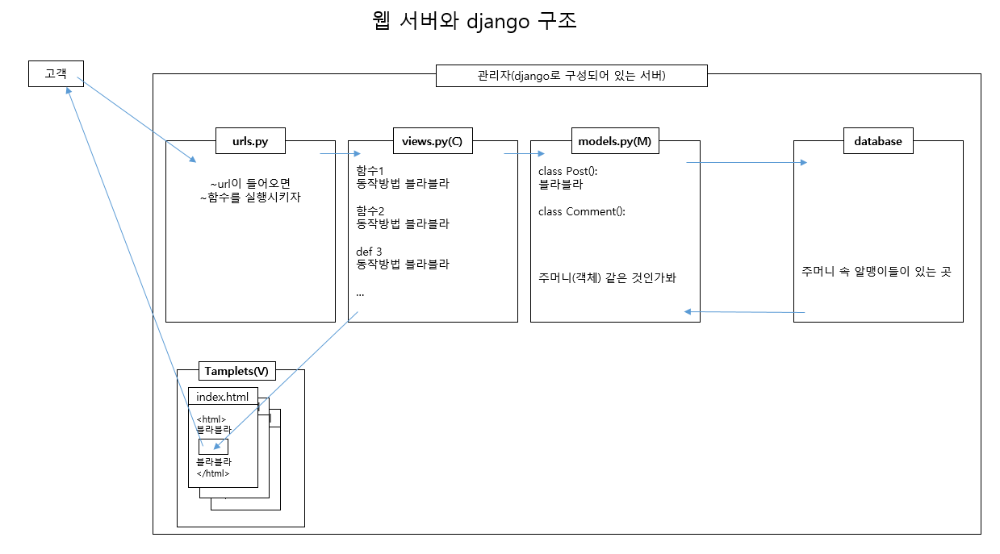
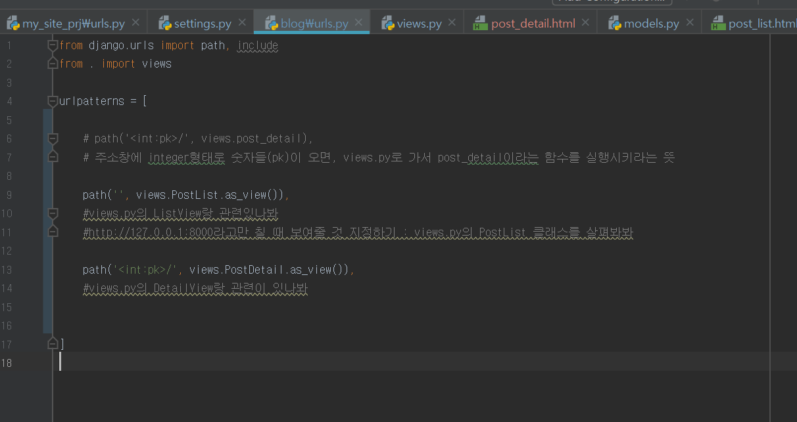
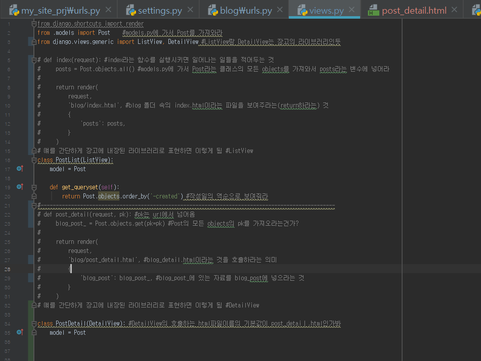
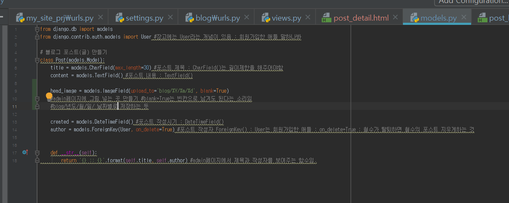

<!DOCTYPE html>
<html lang="en">

<head>
    <meta charset="UTF-8">
    <meta name="viewport" content="width=device-width, initial-scale=1.0">
    <meta http-equiv="X-UA-Compatible" content="ie=edge">
    <title>django로 웹 서버 개발하기</title>

    <link rel="stylesheet" href="https://cdnjs.cloudflare.com/ajax/libs/meyer-reset/2.0/reset.css">
    <link rel="stylesheet" href="../../../design-control/css/tamplet.css">

    <style>
        .first_title>li {
            font-size: 14px;
        }

        .second_title>li {
            font-size: 12px;
            text-indent: 5px;
            font-weight: bold;
        }

        .third_title>li {
            font-size: 10px;
            text-indent: 10px;
        }

        .fourth_title>li {
            font-size: 8px;
            text-indent: 15px;
        }

        .fifth {
            font-size: 8px;
            margin-left: 20px;
        }
    </style>
</head>

<body>
</body>

</html>

<!DOCTYPE html>
<html>

<head>
    <meta charset="utf-8">
    <title></title>
</head>

<body>
    <div class="container">
        <header>
            <h1>python - django #pycharm</h1>
        </header>
        <section class="content">
            <nav>
                <div style="position: fixed;">
                    <ol>
                        <li><strong>blog</strong></li>
                        <ol>
                            <li>1. urls.py</li>
                            <li>2. views.py</li>
                            <li>3. models.py</li>
                            <li>templates(이 안에 html파일 여러 개 있음)</li>
                            <li>* admin.py</li>
                            <li>* test.py</li>
                        </ol>
                        <br>
                        <li><strong>my_site_prj</strong></li>
                        <ol>
                            <li>* urls.py</li>
                            <li>* settings.py</li>
                        </ol>
                    </ol>
                </div>
            </nav>
            <main>


                
                <hr>
                <h1>blog</h1>
                <h3>0. 기타사항</h3>
                <p>
                    models.py에 뭔가 추가하면 makemigrations랑 migrate를 해야하나봐
                </p>
                <p>
                    가상서버 실행시키기 : venv\Scripst\activate.bat
                </p>
                <p>
                    가상서버에서의 명령
                    python manage.py createsuperuser : 관리자 만들기<br>
                    python manage.py runserver : 서버 돌리기<br>
                    python manage.py makemigrations : database가 변경이 된 것이 있으면 반영하라는 명령<br>
                    python manage.py migrate : db에 변화가 생긴 것을 반영하는 명령. 새로운 database 만들기 인듯 db.sqlite3가 만들어지던데<br>

                    python manage.py startapp blog : blog 만들기 -> 여기에 views.py, models.py 있음<br>


                    python manage.py test<br>
                </p>
                <h3>1. urls.py</h3>
                <p>
                    어디로 가서 어떤 함수나 라이브러리를 실행하면 되는지 알려주는 파일임.
                    내가 알고 있는 라이브러리는 ListView와 DetailView임.<br>
                    형태는<br>
                    urlpatterns = [<br>
                    &nbsp&nbsp&nbsp&nbsp path('<int:pk>/', views.post_detail),<br>
                        &nbsp&nbsp&nbsp&nbsp path('', views.PostList.as_view()),<br>
                        &nbsp&nbsp&nbsp&nbsp path('<int:pk>/', views.PostDetail.as_view()),<br>
                            ]<br>
                            
                </p>
                <h3>2. views.py</h3>
                <p>
                    Post.objects.all() : Post와 관련된 것 다 가져와
                </p>
                <p>
                    views.py에서 만든 함수(def)에서 return을 하면 templates로 보낸다.
                </p>
                <p>
                    
                </p>
               


                <h3>3. models.py</h3>
                <p>
                    class들을 만들어서 데이터가 저장될 주머니들을 만드는 곳<br>
                    ex)<br>
                    <div style="border : 1px solid black; width: 300px; padding: 10px; margin-left: 15px;">
                        class 클래스_이름(models.Model):<br>
                        &nbsp&nbsp&nbsp&nbsp블라블라<br>
                        <br>
                        &nbsp&nbsp&nbsp&nbspdef 함수_이름<br>
                        &nbsp&nbsp&nbsp&nbsp&nbsp&nbsp&nbsp&nbspreturn '블라블라'
                    </div>
                </p>
                <p>
                    models.py에 변화가 생겨서 db에 변화가 생길 땐, python manage.py makemigrations랑 python manage.py migrate를 해야한다.
                </p>
                <p>
                    on_delete=True : 철수가 탈퇴하면 철수의 포스트 지우게하는 것<br>
                    on_delete=models.SET_NULL : 철수가 탈퇴해도 남겨놓는 것<br>
                </p>
                <p>
                    ForeignKey(다대일 구조 : many to one 구조) : many to one 구조를 만들어야 할 때 사용한다. 1개의 포스트가 1개의 카테고리에 들어갈 수 있게 하는
                    것이다.
                    1개의 포스트가 여러 개의 카테코리에 들어가도록 하려면(cf. 인스타 #태그에 많이 쓰임) 다대다(many to many) 구조를 쓰면 된다.
                </p>
                


                <h3>templates</h3>
                <p>
                    여기에 html파일들이 들어감<br>
                    html파일 안에<br>
                    {{ lts }}라고 쓰면 view.py에 가서 lts라는 (리스트 or 튜플 or 문자열)을 찾고 그 내용물을 가져와서 고객한테 보여줌<br>
                    <br>
                    {% for var in lts %}<br>
                    &nbsp&nbsp&nbsp&nbsp{{ var }}<br>
                    {% endfor %}<br>
                    라고 쓰면 view.py에 가서 lts라는 (리스트 or 튜플 or 문자열)을 찾고 그 내용물을 var라는 변수에 넣어서 반복적으로 고객한테 보여줌<br>
                    <br>
                    여기서 {{ var }}대신에 {{ var.title }}이라고 쓰면<br>
                    lts(리스트 or 튜플 or 문자열)라는 클래스의 항목 중 하나인 title만 보여줌

                </p>

                <h3>* admin.py</h3>
                <p>
                    관리자 페이지에 관련된 것을 보여주나봐
                </p>


                <h3>* test.py</h3>
                <p>
                    테스트 코드 작성하는 곳
                </p>
                <h4>TDD 개발 기법</h4>
                <p>
                    test code 만들기 -> 기능 구현 -> refactoring<br>
                    setUp(self)는 초기화해주는 것인가봐<br>
                    body.find('div', id='x') : body태그 중 div태그 중 id가 x인 것을 찾아라<br>
                    self.assertIn(x, y) : y에 x가 있니?<br>
                </p>
                <h5>views.py 테스트하기</h5>
                <p>
                    TestView(TestCase)로 하나봐
                </p>

                <h5>model.py 테스트하기</h5>
                <p>
                    class TestModel(TestCase):<br>
                    &nbsp&nbsp&nbsp&nbspdef 블라블라
                </p>


                <p>
                    beautiful soup<br>
                    soup.title : 이렇게 하면 html파일의 title을 바로 가져올 수 있음.
                </p>
                <p>
                    <strong>get_absolute_url()</strong>??<br>
                    <br>
                    x, y = a.objects.<strong>get_or_create</strong>(<br>
                    &nbsp&nbsp&nbsp&nbsp 조건<br>
                    ) : 조건이 맞는게 있으면 x에 저장하고, 없다면 새로 만들어서 y에 저장해라.<br>
                </p>
                <p>
                    cmd 창에서<br>
                    python manage.py test
                </p>

                <hr>
                <h1>my_site_prj</h1>
                <h3>* urls.py</h3>
                <p>
                    여긴 전체에 적용되는 url을 말하나봐. MTV의 urls.py는 아닌듯
                </p>

                <h3>* settings.py</h3>
                <p>
                    한국으로 시간설정하기
                    
                </p>


                <hr>

                <h3>기타</h3>


                <h4>git에 올리기</h4>
                <p>
                    git add .<br>
                    git commit -m "블라블라"<br>
                    git push<br>
                </p>

                <h4>단축키</h4>
                <p>
                    ctrl + c : 서버 내리기
                </p>
                <h4>명령어</h4>
                <p>
                    x.objects.all() : x의 객체를 전부 가져와라<br>
                    x.objects.get() : x의 객체를 가져와라?<br>
                    x.objects.count() : x의 객체가 몇 개인지 세라<br>
                    x.objects.create() : x에 객체를 만들어라<br>
                    x.objects.filter(조건) : x의 객체 중 조건에 맞는 것만 가져와라
                    <br>
                    .text : 태그는 떼고, 내용만 가져와라

                </p>

                <h4>jinja 템플릿 문법</h4>
                <p>
                    조건문<br>
                    {% if 조건식 %}<br>
                    <br>
                    {% else %}<br>
                    <br>
                    {% endif %}
                    <br>
                    <br>
                    반복문<br>
                    {% for 반복식 %}<br>
                    { endfor }
                </p>
            </main>
            <aside>

            </aside>
        </section>
        <footer>
            footer 내용
        </footer>
    </div>
</body>

</html>